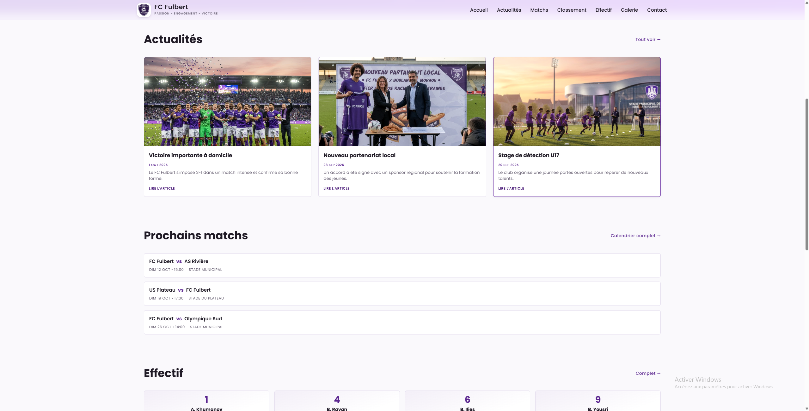
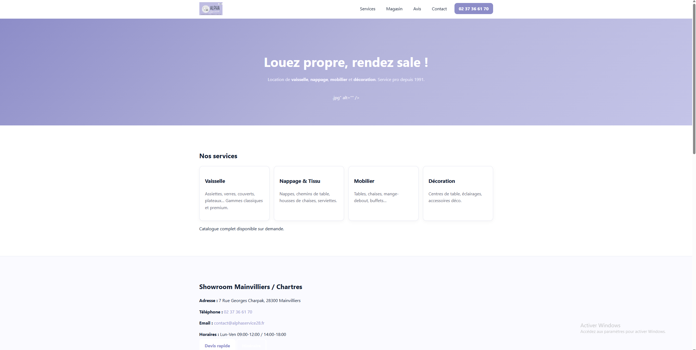

01
FC Fulbert
Site vitrine sportif avec navigation mobile fluide et travail de referencement naturel (SEO).
Voir le projet ↗
Portfolio 2026
Etudiant · Developpeur web
Je construis des experiences web nettes, rapides et orientees resultat.
Voir mes projets
Site vitrine sportif avec navigation mobile fluide et travail de referencement naturel (SEO).
Voir le projet ↗Plateforme auto avec structure claire et consultation rapide.

Site corporate orientee conversion et prise de contact.
Etudiant developpeur web base a Chartres, je transforme des idees metier en interfaces claires et efficaces.
Mon approche combine design utile, execution rapide et attention au detail. Je privilegie des experiences fluides, des performances solides et une communication visuelle claire.
Groupe Covea
Stagiaire
Janvier - Fevrier 2026
Stage realise a Chartres avec contribution aux activites professionnelles de l'equipe.
Your Next Car
Stagiaire
Mai - Juin 2025
Stage a Champhol axe sur la mise en place et l'amelioration d'elements web.
Alpha Service
Administrateur du reseau
Juillet - Septembre 2024
Mission a Mainvilliers orientee administration reseau et support technique.
Je suis Ilies Benali, developpeur web front-end base a Chartres. Je cree des sites modernes, performants et optimises pour Google.
J'accompagne les entreprises, associations et independants dans la creation de sites vitrine, portfolio, et applications web reactives. Specialise en HTML, CSS, JavaScript et optimisation SEO technique, je garantis une visibilite maximale sur les moteurs de recherche.
Mes services : creation de sites web, integration HTML/CSS/JavaScript, optimisation SEO, design responsive, UX/UI et performance web.
Basé à Chartres (Eure-et-Loir 28), j'interviens dans toute la region Centre-Val de Loire et Île-de-France. Disponible pour des missions court terme, long terme, stages et alternances.
En tant que developpeur local a Chartres, je comprends les enjeux des entreprises de la region. Je livre des sites web optimises pour le SEO local, rapides, accessibles et convertissants.
Ilies Benali est un developpeur web front-end base a Chartres, en Eure-et-Loir, etudiant en BTS SIO SLAM. Specialise en creation de sites web avec HTML5, CSS3, JavaScript et PHP.
Maitrise complète de HTML5, CSS3, JavaScript ES6+, PHP, Git et GitHub. Competences en UX/UI, responsive design, optimisation SEO technique et wireframing. Familiarise avec Scrum et methodes Agile.
Portfolio web, site vitrine pour PME, site corporate, landing page optimisee conversion, application web interactive. Toujours avec focus sur performance et SEO.
Oui, je suis disponible pour des stages et alternances en developpement web front-end. Mobilité locale et region Centre confirmée.
Contactez-moi par email à ilies.benali28@gmail.com, via LinkedIn (ilies-benali) ou GitHub (i2sbl). Reponse rapide garantie.
Les tarifs dependent de la complexite du projet. Je propose des devis gratuits et etudies pour chaque demande. Contactez pour une consultation.
Service de creation et developpement web specialise pour les entreprises, commercants et associations de Chartres. Solutions sur-mesure adaptees aux besoins locaux.
Chartres (28000), Mainvilliers, Lucé, Le Coudray, Champhol — toute la region Eure-et-Loir et Centre-Val de Loire. Également disponible pour la region Île-de-France.
Contact
Vous avez un projet ou une opportunite ? Parlons-en.